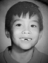

The Bride and Groom
KAY
 Kay was born and raised in Bayside, NY along with her three siblings; Hiromu, Ayumi, and Megu. As the eldest daughter (and often times mistaken as the oldest child), Kay spent her childhood as the quiet responsible one, taking care of her sisters and participating in church activities at NY Center. Kay had always dreamed of living in Japan so when it came time to choose a college, she applied to Boston University for their renown study abroad program in Kyoto. Kay explored life away from NYC and made new friends in both Boston and Kyoto, graduating with a BA in Japanese Language and Literature. Kay not only left college with a better understanding of Japanese, but also with a handsome boyfriend that would eventually become her future husband. Kay is adding to her vows that she will forever allow Matt complete control over any technology purchase.
Kay was born and raised in Bayside, NY along with her three siblings; Hiromu, Ayumi, and Megu. As the eldest daughter (and often times mistaken as the oldest child), Kay spent her childhood as the quiet responsible one, taking care of her sisters and participating in church activities at NY Center. Kay had always dreamed of living in Japan so when it came time to choose a college, she applied to Boston University for their renown study abroad program in Kyoto. Kay explored life away from NYC and made new friends in both Boston and Kyoto, graduating with a BA in Japanese Language and Literature. Kay not only left college with a better understanding of Japanese, but also with a handsome boyfriend that would eventually become her future husband. Kay is adding to her vows that she will forever allow Matt complete control over any technology purchase.
MATT
 Born in Jacksonville, Florida, Matt spent a good portion of his life growing up in the "dirty" south with his loving family (immediate and extended). Although a fervent believer of fried foods and flip flops, Matt decided to venture north for college and to escape the sunshine in exchange for the gloomy New England winters. Graduating from Brandeis University with a degree in Economics and East Asian Studies, Matt's newly acquired taste for baseball, snow, and the amazing girlfriend he met in college led him to make his life in the Big Apple. Matt now works for an advertisement technology company as a Solutions Engineer, making sure that the advertisements you see before your favorite Youtube videos annoy you with the most relevant content. Matt is adding to his vows a lifetime IT guarantee to Kay, that he will be readily available 24/7 to troubleshoot... anything & everything technical.
HOW WE MET
In the late summer of 2008, two starry-eyed college students were in Kyoto, Japan, ready for a full year of study abroad. Matt, then a young man with a keen sense of adventure, was determined to have many experiences and to make tons of friends along the way. Kay, already an experienced traveler of the land of Rising Sun, was ready to sit back, relax, and enjoy her Senior year of college. Although in separate classes, Matt and Kay ran into each other quite a bit. What started off as friendly after-school chats, Matt was soon attending Kay's popular dinner parties, and before you know it, they were inseparable as they were working together on the ever worrying job hunt. In no time, they discovered that they were very compatible and very much in love. Since then, they've shared some amazing adventures around the world, each other's toothbrushes, and now they're ready to share the rest of their lives together, too.
THE ENGAGEMENT
One fine Saturday on a chilly November, Matt decided to take Kay on a terrific lady date for her birthday present. They started off at the Brooklyn Botanical Gardens and took a pleasant stroll through the rose conservatory. Afterwards they took a memorable walk into Manhattan across the iconic Brooklyn Bridge. With the sunset soon approaching, Matt surprised Kay when they entered the Empire State Building. Express tickets in hand, they quickly bypassed all the lines and at the top of the observation deck, Matt gazed into Kay's eyes...
... and did absolutely nothing. Fast forward to the next week. Matt and (the slightly disappointed) Kay went to her parent's house in Queens for their monthly church service. After the service was finished, Kay's father delivered a stirring speech about meetings not being coincidences. And he was right. It wasn't a coincidence that Kay and Matt met in Kyoto during their college years. Right then and there, in front of all of Kay's family and friends, Matt confessed his love for Kay. Kneeling down on one knee, he offered her a beautiful ring and asked Kay to be his wife. Kay, red with embarrassment, said yes. The rest, ladies and gentlemen, is history.
For those inclined, video of the full proposal can be viewed here
Wedding
CEREMONY
Tenrikyo Mission New York Center
42-19 147th Street
Flushing, New York
Saturday, September 27th, 2014
2:00 PM at the Main Sanctuary, Tenrikyo Mission New York Center
*Reception to follow at the Inn at Great Neck
SCHEDULE OF EVENTS
Rehearsal Dinner
Friday, September 26th at 6:30pm
A Filipino & Japanese feast
Ceremony
Saturday, September 27th at 2:00pm
Reception at the Inn at Great Neck
Saturday, September 27th at 6:00pm
WEDDING PARTY
Bridesmaids
Hyun Lee
Samantha Sabban
Ayumi Kamio
Megumi Kamio
Groomsmen
Vincent Bariuan
Jason Chan
Wesley Ho
Xavier Bariuan
Accomodations
HOTELS
(At the venue)
The Inn at Great Neck
30 Cutter Miller Road
Great Neck, NY 11021
(516) 773-2000
$199
*Reservations must be made by June 15th, 2014 to guarantee the special group rate listed above. Also, when making reservations, please be sure to mention Kamio-Sabban Wedding to get the special group rate.
DIRECTIONS
via Public Transportation
Take the eastbound Long Island Railroad on the Port Washington Branch to Great Neck Station. The Inn at Great Neck is a 3 minute walk from Great Neck Station, down Cutter Mill Road. The complete timetable for the LIRR can be found here.
LaGuardia Airport
Exit the airport and follow the signs for The Grand Central Parkway East. Travel the parkway to the Long Island Expressway, Route 495 East. Continue on 495 East to Exit 33 Great Neck/Lakeville Road. Travel north on Lakeville Road approximately 2 miles to the 11th traffic light. Turn left onto Cutter Mill Road. The Inn is on the left.
JFK International Airport
Exit the airport following the signs for Belt Parkway East. Travel the parkway to the Cross Island Parkway North, travel the parkway to the Long Island Expressway, Route 495 East. Continue on 495 East to Exit 33 Great Neck/Lakeville Road. Travel north on Lakeville Road approximately 2 miles to the 11th traffic light. Turn left onto Cutter Mill Road. The Inn is on the left.
Northbound (Coming from Jersey)
Travel on the NJ Turnpike to Exit 18W - George Washington Bridge. Proceed across the George Washington Bridge on 95 North to Exit 6, Throgs Neck Bridge, South 295. Travel South 295 - Clearview Expressway to the Long Island Expressway, Route 495 East. Continue on 495 East to Exit 33 Great Neck/Lakeville Road. Travel north on Lakeville Road approximately 2 miles to the 11th traffic light. Turn left onto Cutter Mill Road. The Inn is on the left.
Southbound (Coming from Westchester/New England)
Travel Route 95 South, New England Thruway, to Route 695 South, Bruckner Expressway. Expressway will lead to Route 295 South, Throgs Neck Bridge. Travel South 295 - Clearview Expressway to the Long Island Expressway, Route 495 East. Continue on 495 East to Exit 33 Great Neck/Lakeville Road. Travel north on Lakeville Road approximately 2 miles to the 11th traffic light. Turn left onto Cutter Mill Road. The Inn is on the left.
VICINITY MAP
ABOUT THE INN AT GREAT NECK
The Inn at Great Neck is a privately owned and operated luxury boutique hotel on Long Island that is conveniently located on Long Island’s beautiful and historic North Shore, also known as the Gold Coast amongst the tree-lined streets of Great Neck. The Hotel showcases a unique Art Deco decor throughout the property commemorating the rich history of the roaring 20′s Jazz Age on Long Island, as the Hotel itself is located in what F. Scott Fitzgerald referred to as the "West Egg" in his novel, The Great Gatsby. The Inn is also located less than two blocks from the Great Neck Train Station, from which guests can take a train directly into New York City in approximately 25 minutes. You can go here for more information.
ABOUT THE TOWN OF GREAT NECK
Occupying only 1.4 square miles of the Great Neck Peninsula of Long Island, Great Neck is one of the first suburbs encountered when entering Nassau County. Its close proximity to New York City has made the town a hotspot for economic and real-estate growth since the "roaring twenties" and was home to many prolific historical figures such as F. Scott Fitzgerald and the Marx Brothers. Although a residential neighborhood, there are many cafes and small boutiques along the main street, just walking distance from the Long Island Railroad Station. The town is a perfect representation of a beautiful and bustling suburb within arms reach of the big city.
REGISTRY
Due to the nature of city life (not a great deal of storage space), we have decided to embrace a smaller-than-usual wedding registry. We are registered with Amazon and you can find our wish list here
LOVE NOTES FOR KAY & MATT
Email us at mattkaysabban@gmail.com
Or better yet, feel free to call us at 1-347-899-0745